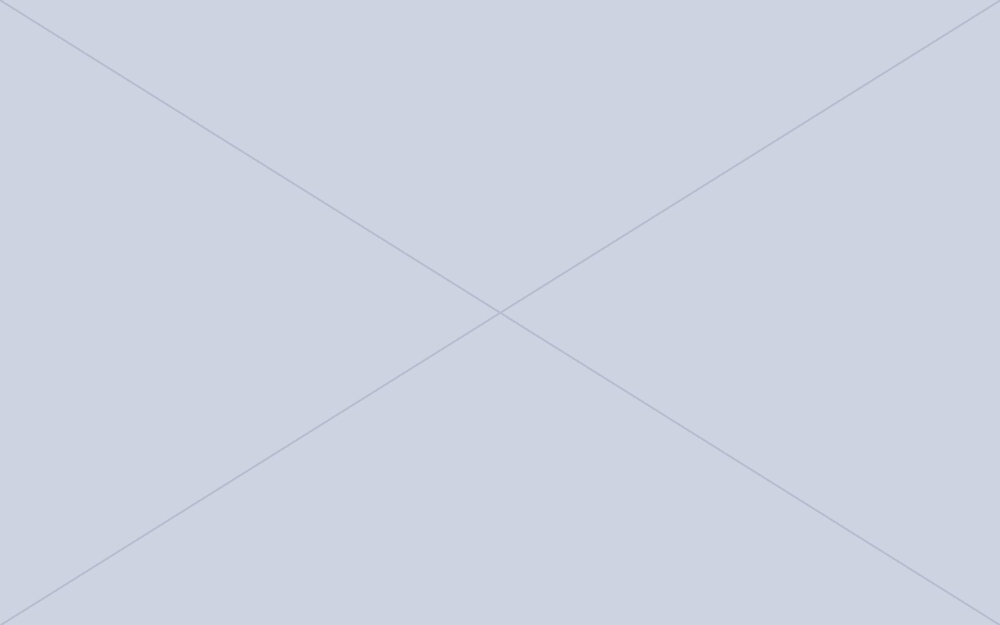

年代・種目ごとに、日程・試合結果・お知らせをまとめています。
CATEGORY
SENIOR
シニア（シニア委員会）の大会・リーグの日程・試合結果と、お知らせを掲載しています。

CONTACT
（一社）長野県サッカー協会〒390-8565 長野県松本市深志2丁目6-9 LON BLDG. 3FTEL 0263-87-8565（事務局）
大会・講習会の詳細は、各要項に記載の担当へお問い合わせください。